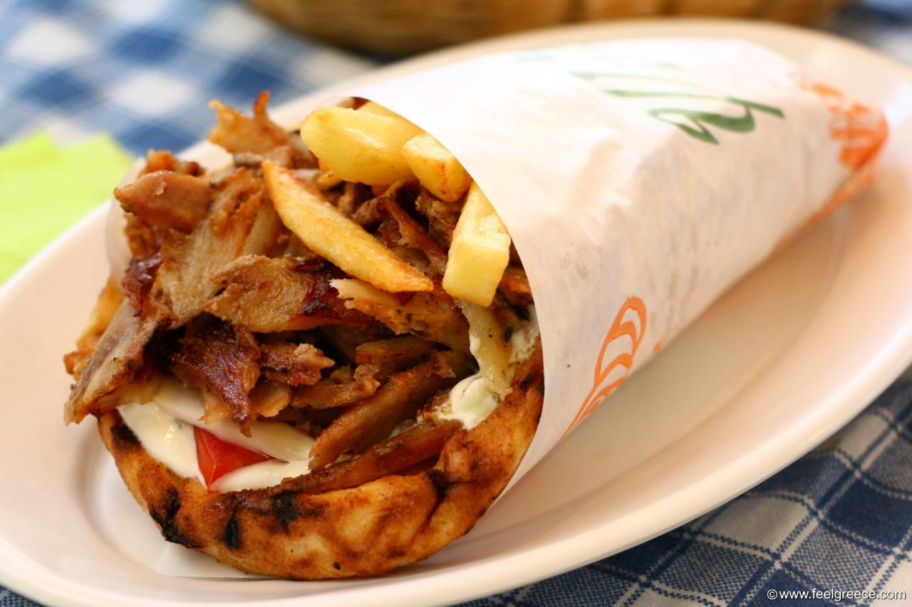

Greek Gyros

Ingredients
- 1 kilo pork leg, 5 cutlets, well-pounded
- 14 g salt
- 1 tomato
- 1 onion
- 1/4 bunch parsley
- 6 souvlaki pita breads
- 6 tablespoon(s) Greek tzatziki sauce
- 100 g French fries
- 50 g olive oil
- 1 tablespoon(s) paprika, sweet
Recipe
-
Place a grill pan over high heat, until it gets very hot.
-
Add all the ingredients for the marinade into a bowl and mix well with a spoon.
-
Add the meat and marinate it well, so that the marinade goes everywhere.
- Add each pork piece to the grill pan, fry it for 1 minute on each side, remove, wipe the pan with paper towels, and follow the same process for the remaining meat pieces.
- Cut the tomato and the onion into thin slices.
- Finely chop the parsley.
- Take one pita bread and spread with 1 tablespoon tzatziki sauce.
- Add some pork gyro, tomato slices, onion, parsley, and French fries.
- Wrap and serve.